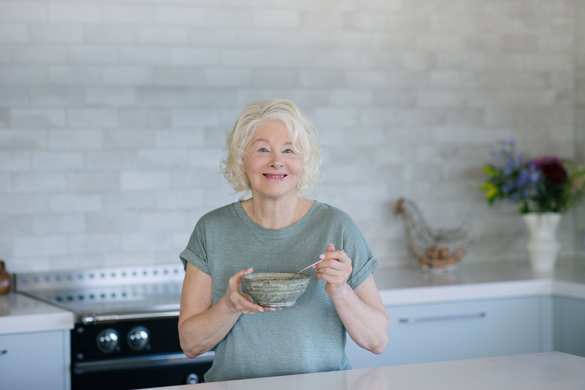
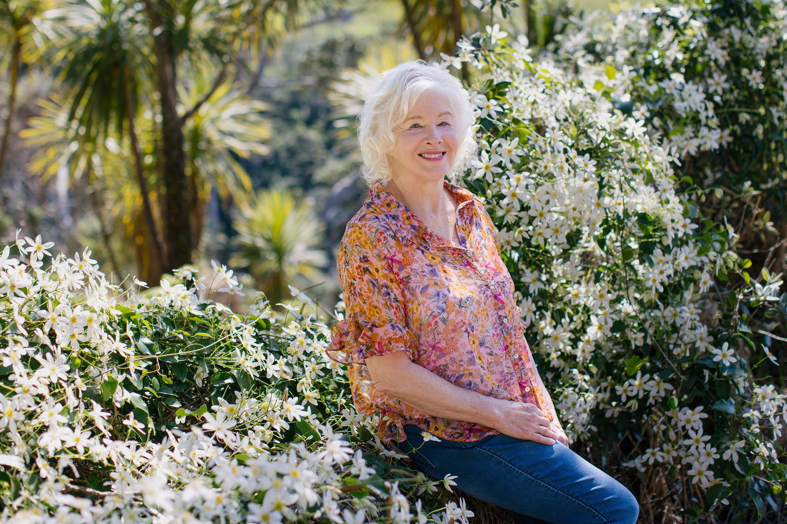

Recovery nutrition · Holistic practice
Eating well, when it matters most.
Real-food guidance for preparing for surgery, recovering at home, and managing long-term health — drawn from clinical experience and the quiet wisdom of nourishing meals.
A new book · available 3 August 2026
Heal Better, Heal Faster.
The book that tells you exactly what to eat to heal better — and faster.
In Heal Better, Heal Faster, you’ll learn which foods help wounds heal faster, reduce the risk of infection, and support your body’s own repair systems — and which ones are best avoided during recovery. Whether you’re preparing for surgery, recovering from illness or injury, or caring for someone you love, this is a practical guide to support healing, one nourishing bite at a time.

Meet Lynn
A holistic nutritionist, food educator and writer.
Lynn Slovak has a deep respect for the healing power of real food. Based in Northland, New Zealand, her work blends scientific rigour with her own experience — including her rapid recovery from two major operations.

Nourishment for every stage of healing